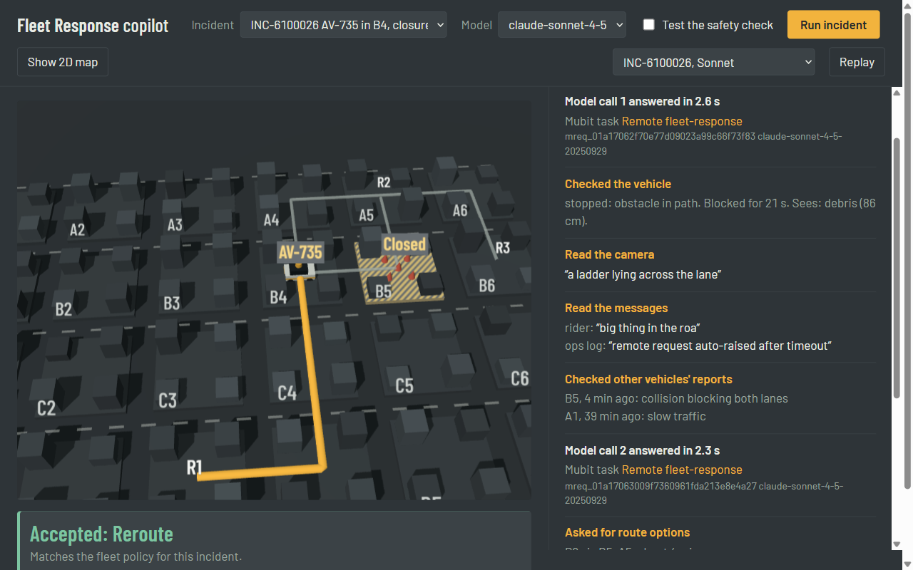

An AI first responder for autonomous vehicles that get stuck. It advises; code decides; Mubit turns every step into the fleet's own model.
Mubit Night Shift, London, October 2026
github.com/aswin-giridhar/mubit-fleet
A double-parked van, roadworks, a police officer waving traffic through, a frightened rider. The car asks a remote agent for context. The agent suggests a lane or a path, and the car stays in control.
Waymo calls this fleet response, and describes it as advice, not control.
remote agents on duty, reported for a fleet of about 3,000 vehicles. Every request an AI resolves correctly is one a person doesn't have to.
Sources: waymo.com/blog/2024/05/fleet-response, waymo.com/blog/shorts/advice-not-control-the-role-of-remote-assistance, TechCrunch Mobility (22 Feb 2026)
2Reads messy evidence (sensors, camera caption, rider and staff messages) and names one of ten incident types.
Mubit task 1
Starts with only an alert, calls five tools to investigate, then submits one piece of advice.
Mubit task 2, tool use
Code checks the advice against hard safety rules. Anything that breaks one goes to a human.
Plain code, no model
On 40 incidents the validator blocked 1 unsafe suggestion, from the smaller model. Swapping models cannot make the fleet unsafe.

The demo view runs live from fleet/: a city grid, the agent's tool calls, and the verdict.
152 calls, one frozen prompt. Adapter v1 passed at 93.8%
254 tool-use calls, one frozen prompt and tool list
Automatic once a version answers within 5 points of the provider model. No code change.
| Claude Sonnet 4.5 | Claude Haiku 4.5 | |
|---|---|---|
| Correct advice | 90% | 72% |
| Unsafe advice blocked by code | 0 | 1 |
| Median time to advice | 9.5 s | 5.3 s |
| Estimated cost per 1,000 incidents | $17.11 | $5.48 |
40 generated incidents (seed 61), identical for both models, run through Mubit. Costs are estimates from list prices.
8Help requests grow with the fleet, every vehicle, every day.
About 3,600 input tokens per incident on Sonnet: a tool loop, not a single call.
A stuck vehicle blocks traffic and a rider the whole time the model thinks.
Incident data is safety-sensitive. Each fleet should own the model it trains.
Honest note: triage is easy for every model we tried (both 97%), so it may stay prompt-only. The responder is where a dedicated model earns its place.
9github.com/aswin-giridhar/mubit-fleet
10